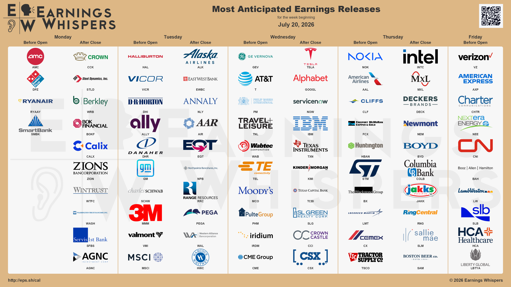

# Victory Lane Earnings Preview — Week of July 20, 2026
---
Reports: Monday, July 20, 2026 — Before Market Open (~7:40 AM ET)
Consensus EPS: Breakeven ($0.00) | Whisper: $0.03
Revenue Estimate: $1.48B | YoY Growth: +5.9%
Guidance vs. Consensus: Management reaffirmed full-year box-office guide; analysts watching for a move toward the raised top end
Sentiment: Bullish — 76.2% expecting a beat
Short Interest: Down 40.9% since last quarter — significant short covering
Implied Move: 34.3% vs. 2.6% historical average — massive disconnect, worth respecting
Notable Options Activity: 16,440 of the $1.50 puts (Aug 21 expiry) bought on July 17 — hedging against the outsized implied swing
Estimate Revisions: Revised higher
Key Context: Last quarter delivered the best Q1 adjusted EBITDA since 2019 ($38.3M, a $96M YoY swing), revenue back above $1B for the first time since 2019, and a record $15.19 contribution margin per patron on +22% North American box office. Balance sheet de-risked materially — notes converting to equity, 2027 debt refinanced to 2031. New catalyst is Arena One, a live-concert product rolling across 300+ US theaters at near-zero upfront capex. Watch cash position (fell to $339M last quarter) and whether management is free-cash-flow positive on a full-year basis.
---
Reports: Monday, July 20, 2026 — Before Market Open (~6:05 AM ET)
Consensus EPS: $4.11 | Whisper: $3.98 (below-consensus — notable caution signal)
Revenue Estimate: $1.18B | YoY Growth: +3.0%
Sentiment: Bearish — only 44% expecting a beat
Estimate Revisions: Data indicates caution setting in; whisper below consensus reinforces the bearish lean
Key Context: The below-consensus whisper number is the headline here — that's a rare setup that signals the buy-side is more skeptical than the published estimate suggests. Watch same-store comp trajectory as the primary swing factor.
---
Reports: Thursday, July 23, 2026 — Before Market Open
Consensus EPS: $0.07 | Whisper: $0.08
Revenue Estimate: $5.59B | YoY Growth: +8.4%
Guidance vs. Consensus: Management raised FY26 network infrastructure growth guide to 12–14% (from 6–8%) and optical+IP to 18–20%; group profit range reaffirmed but not raised
Sentiment: Bullish — 71.1% expecting a beat
Short Interest: Up 8.6% since last quarter
Implied Move: 13.0% vs. 7.0% historical average — nearly double the norm
Notable Options Activity: 43,045 contracts of the August $12.00 calls purchased on July 14
Estimate Revisions: Revised higher
Key Context: Last quarter was the first hard guidance raise in a year, driven by €1B in new AI & cloud orders at ~3x book-to-bill and 49% AI/cloud sales growth. The catalysts are real, but the bar is high — the group profit range was reaffirmed, not raised. Watch IP networks for order conversion (only +3% last quarter on design wins), gross margin progress off Q1's 45.5%, and any commentary on the 12–18 month optical lead times and memory inflation headwinds. Fixed networks remain a deliberate drag (-13%). Another order acceleration plus a formal profit guidance lift is what bulls are paying for.
---
Reports: Wednesday, July 22, 2026 — After Market Close (~4:05 PM ET)
Consensus EPS: $0.53 | Whisper: $0.55
Revenue Estimate: $25.36B | YoY Growth: +12.7%
Guidance vs. Consensus: Management guided to negative free cash flow for the remainder of 2026 as CapEx escalates past $25B — a meaningful overhang against revenue momentum
Sentiment: Bullish — 58.5% expecting a beat
Short Interest: Up 20.6% since last quarter — bears adding aggressively
Implied Move: 7.1% vs. 4.3% historical average
Notable Options Activity: 35,552 of the $150.00 puts (July 24 expiry) bought on Friday — notable near-term downside positioning
Estimate Revisions: Revised lower
Key Context: Q1 delivered a clean sequential margin ramp in auto gross margin ex-credits (19.2%, up from 15.0% YoY), demand resurgence in Europe (+150% q/q in France/Germany), and FSD paid subs at ~1.3M with declining churn. Regulatory wins are stacking up — Netherlands FSD approved, EU-wide expected Q2, China targeted Q3. The offsets are material: ~$230M in warranty/tariff one-timers propped Q1 margins, energy's record 39.5% margin included a >$250M one-time tariff benefit, and CapEx is escalating past $25B with explicit negative FCF guidance for the rest of 2026. Watch margin normalization ex one-timers, the CapEx trajectory, and any hard update on Optimus V3 and China FSD progress.
---
Reports: Wednesday, July 22, 2026 — After Market Close (~4:00 PM ET)
Consensus EPS: $2.87 | Whisper: $3.10 (23 cents above consensus — significant gap)
Revenue Estimate: Not explicitly stated; Cloud crossed $20B last quarter at +63% YoY growth
YoY Growth: Accelerating — Search +19% last quarter (fourth consecutive acceleration)
Guidance vs. Consensus: FY26 CapEx raised to $180–190B; FCF fell to $10.1B on $35.7B quarterly outlay; FY27 spending signaled to "significantly increase"
Sentiment: Bullish — 79.6% expecting a beat
Short Interest: Up 10.0% since last quarter
Implied Move: 6.8% vs. 3.8% historical average
Notable Options Activity: 60,326 of the $415 calls (Aug 21 expiry) bought on July 15
Estimate Revisions: Revised higher
Key Context: Last quarter was across-the-board acceleration. Cloud is the primary story — revenue +63%, margins expanded to 32.9%, and backlog nearly doubled to $462B (note: roughly half the jump reflects new TPU hardware agreements, not pure demand). Search accelerated for a fourth straight quarter. Wiz and Intersect acquisitions add new fuel. The central tension is spending — CapEx at $180–190B for FY26, FCF declining, and management signaling even higher FY27 outlays. Watch cloud growth sustainability against a shrinking ~1pt FX tailwind, Wiz margin headwind, and any commentary on whether compute supply constraints are easing. The 23-cent whisper premium above consensus sets a high bar.
---
Reports: Wednesday, July 22, 2026 — After Market Close (~4:10 PM ET)
Consensus EPS: $0.86 | Whisper: $0.90
Revenue Estimate: $3.92B | YoY Growth: +21.9%
Guidance vs. Consensus: Company guided revenue of ~$3.82B — consensus sits above at $3.92B
Sentiment: Bearish — despite 69.0% expecting a beat, overall sentiment is negative heading in
Short Interest: Up 107.9% since last quarter — more than doubled; significant skepticism
Implied Move: 12.8% vs. 10.2% historical average
Notable Options Activity: 15,010 of the $60.00 puts (July 24 expiry) bought on July 16
Estimate Revisions: Revised lower
Key Context: The core tension: fundamentals are improving but the market wants proof the growth is organic. NowAssist run-rate hit $1.5B (vs. prior $1B FY26 target), million-plus NowAssist customers up 130%+ YoY, record new-logo lands. The bearish case — Q1's guidance raise was almost entirely Armis-driven, the organic full-year guide was held flat, and margins stepped down across the board (op margin to 31.5%, FCF to 35%) on integration costs. Q2 op margin is guided to just 26.5%. Watch for a clean organic revenue raise and cleaner inorganic contribution disclosure. Also monitor the ~75bp Middle East on-prem timing headwind flagged as a Q2 risk. A demonstrably organic raise is the swing factor.
---
Reports: Wednesday, July 22, 2026 — After Market Close (~4:10 PM ET)
Consensus EPS: $3.00 | Whisper: $2.93 (below consensus)
Revenue Estimate: $17.59B | YoY Growth: +3.6%
Guidance vs. Consensus: Management held full-year revenue and FCF guide despite strong Q1, citing macro uncertainty; software guided 10%+, data guided low-20%+
Sentiment: Split — 54.2% expecting a beat
Short Interest: Up 47.2% since last quarter — aggressive bearish positioning
Implied Move: 7.1% vs. 6.9% historical average — in line with the norm
Notable Options Activity: 4,373 contracts of the $200.00 puts (Aug 21 expiry) bought on July 14 — clear bearish positioning
Estimate Revisions: Revised higher (notable disconnect with below-consensus whisper and surging short interest)
Key Context: The disconnect between improving fundamentals and a punished stock defines this setup. Last quarter delivered record Q1 FCF of $2.2B (+13%), 140bps of margin expansion, and raised software/data guides after Confluent closed two months early. Red Hat reaccelerated to 10% and consulting signings returned to growth (+6%). The critical watch: management deliberately held the full-year guide despite the strong start. A second strong quarter that finally prompts a raise would be the catalyst bulls need. Monitor Q2 margin expansion — guided to just ~50bps on ~$600M Confluent dilution — infrastructure guided down low-single-digits, and DRAM supply chain pressure on RHEL-linked hardware.
---
Reports: Wednesday, July 22, 2026 — Before Market Open (~6:30 AM ET)
Consensus EPS: $3.16 | Whisper: $3.47 (31 cents above consensus — buy-side positioned aggressively)
Revenue Estimate: $10.77B | YoY Growth: +18.2%
Guidance vs. Consensus: FY26 revenue guide raised to $44.5–45.5B; adjusted EBITDA margin lifted to 12–14%; FCF guide sharply raised to $6.5–7.5B (vs. $4.8B delivered in Q1 alone)
Sentiment: Bullish — 69.6% expecting a beat
Short Interest: Up 60.3% since last quarter — significant hedging against a stretched position
Implied Move: 10.9% vs. 6.4% historical average
Notable Options Activity: 1,677 of the $840.00 puts (Sept 18 expiry) bought on July 16 — hedging the extended run
Estimate Revisions: Revised higher
Key Context: Last quarter's broad guidance raise set a high bar — backlog climbed to $163B with the $200B target pulled forward to 2027, gas under contract hit 100GW with pricing 10–20 points higher